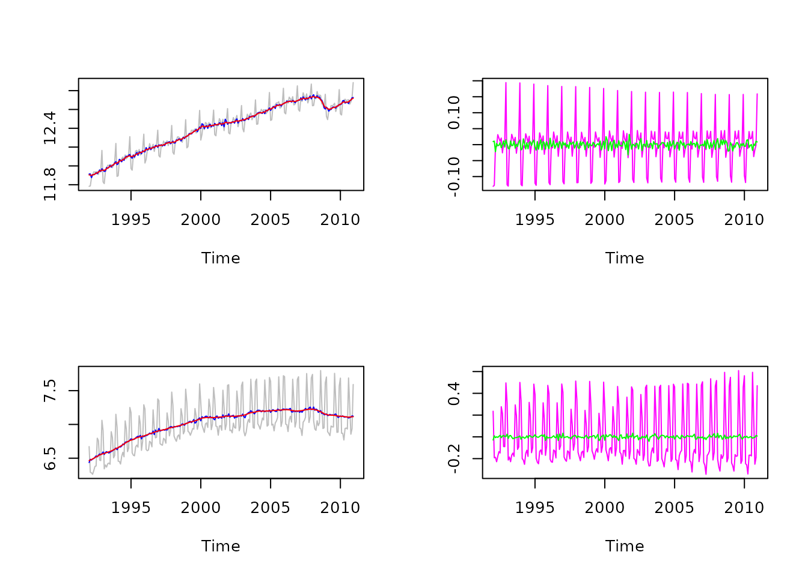

Introduction
Simple SUTSE models can be easily tackled by the state space framework provided in rjd3sts
The sutse function computes simple SUTSE models for wo series
sutse<-function(st){
if (! inherits(st, "ts") || ! inherits(st, "matrix"))
stop(st, " is not a ts matrix")
if (dim(st)[2]!= 2)
stop(st, " must have two columns")
s<-st[,1]
t<-st[,2]
freq<-frequency(st)
start<-start(st)
# re-scaling of the series to minimize numerical problems
vs<-as.numeric(var(s))
vt<-as.numeric(var(t))
es<-sqrt(vs)
et<-sqrt(vt)
s<-s/es
t<-t/et
model<-model()
# create the components and add them to the model
l1<-locallevel("l1", initial = 0)
lt1<-locallineartrend("lt1", levelVariance = 0, fixedLevelVariance = TRUE)
s1<-seasonal("s1", freq, type="HarrisonStevens")
n1<-noise("n1")
l2<-locallevel("l2", initial = 0)
lt2<-locallineartrend("lt2", levelVariance = 0, fixedLevelVariance = TRUE)
s2<-seasonal("s2", freq, type="HarrisonStevens")
n2<-noise("n2")
add(model, l1)
add(model, lt1)
add(model, s1)
add(model, n1)
add(model, l2)
add(model, lt2)
add(model, s2)
add(model, n2)
# create the equation (fix the variance to 0)
eq1<-equation("eq1")
add_equation(eq1, l1)
add_equation(eq1, lt1)
add_equation(eq1, s1)
add_equation(eq1, n1)
add(model, eq1)
eq2<-equation("eq2")
add_equation(eq2, l2)
add_equation(eq2, l1, 0, FALSE)
add_equation(eq2, lt2)
add_equation(eq2, lt1, 0, FALSE)
add_equation(eq2, s2)
add_equation(eq2, s1, 0, FALSE)
add_equation(eq2, n2)
add_equation(eq2, n1, 0, FALSE)
add(model, eq2)
rslt<-estimate(model, cbind(s,t), marginal=TRUE, initialization="Augmented_Robust")
p<-result(rslt, "parameters")
factor<-result(rslt, "scalingfactor")
cl<-p[11]
csl<-p[12]
cs<-p[13]
cn<-p[14]
names<-c("level", "slope", "seasonal", "noise")
variable1<-data.frame(variance=c(factor*p[1]*vs,factor*p[3]*vs, factor*p[4]*vs, factor*p[5]*vs),
row.names = names)
variable2<-data.frame(variance=c(factor*vt*(p[1]*cl*cl+p[6]),
factor*vt*(p[3]*csl*csl+p[8]),
factor*vt*(p[4]*cs*cs+p[9]),
factor*vt*(p[5]*cn*cn+p[10])),
row.names = names)
if (p[1]==0){
lc<-0
}else if (p[6] == 0){
lc<-1
}else{
lc<-sign(cl)/(sqrt(1+p[6]/(cl*cl*p[1])))
}
if (p[3]==0){
sc<-0
}else if (p[8] == 0){
sc<-1
}else{
sc<-sign(csl)/(sqrt(1+p[8]/(csl*csl*p[3])))
}
if (p[4]==0){
ssc<-0
}else if (p[9] == 0){
ssc<-1
}else{
ssc<-sign(cs)/(sqrt(1+p[9]/(cs*cs*p[4])))
}
if (p[5]==0){
nc<-0
}else if (p[10] == 0){
nc<-1
}else{
nc<-sign(cn)/(sqrt(1+p[10]/(cn*cn*p[5])))
}
correlations<-data.frame(variance=c(lc, sc, ssc, nc),
row.names = names)
models<-list(
variable1=variable1,
variable2=variable2,
correlations=correlations
)
ll<-result(rslt, "likelihood.ll")
ser<-result(rslt, "likelihood.ser")
res<-result(rslt, "likelihood.residuals")
likelihood<-list(loglikelihood=ll, ser=ser, residuals=res)
sm<-smoothed_states(rslt)
decomposition1<-list(
series=es*s,
level=es*ts(sm[,1]+sm[,2], frequency = freq, start = start),
seas=es*ts(sm[,4], frequency = freq, start = start),
noise=es*ts(sm[,15], frequency = freq, start = start)
)
decomposition2<-list(
series=et*t,
level=et*ts(sm[,1]*cl+sm[,2]*csl+sm[,16]+sm[,17], frequency = freq, start = start),
seas=et*ts(sm[,4]*cs+sm[,19], frequency = freq, start = start),
noise=et*ts(sm[,15]*cn+sm[,30], frequency = freq, start = start)
)
e<-list(decomposition1=decomposition1,
decomposition2=decomposition2)
return (structure(
list(model=models,
estimation=e,
likelihood=likelihood,
internal=rslt)
, class="JD3_SUTSE"))
}
plot.JD3_SUTSE<-function(q){
if (! inherits(q, "JD3_SUTSE"))
stop(sutse, " should be of class JD3_SUTSE")
par(mfrow=c(2,2))
d<-q$estimation$decomposition1
ts.plot(ts.union(d$series, d$series-d$seas, d$level), col=c("gray", "blue", "red"))
ts.plot(ts.union(d$seas, d$noise), col=c("magenta", "green"))
d<-q$estimation$decomposition2
ts.plot(ts.union(d$series, d$series-d$seas, d$level), col=c("gray", "blue", "red"))
ts.plot(ts.union(d$seas, d$noise), col=c("magenta", "green"))
par(mfrow=c(1,1))
}
logLik.JD3_SUTSE<-function(q){
if (! inherits(q, "JD3_SUTSE"))
stop(q, " should be of class JD3_SUTSE")
return (q$likelihood$loglikelihood)
}
print.JD3_SUTSE<-function(q){
if (! inherits(q, "JD3_SUTSE"))
stop(q, " should be of class JD3_SUTSE")
cat("SUTSE model\n\n")
cat("Max likelihood = ", q$likelihood$loglikelihood, "\n\n")
cat("Variances of series 1\n\n")
print(q$model$variable1)
cat("\n\nVariances of series 2\n\n")
print(q$model$variable2)
cat("\n\nCorrelations between innovations of the two series\n")
print(q$model$correlations)
}
q<-sutse(ts.union(log(Retail$RetailSalesTotal), log(Retail$BookStores)))
print(q)
#> SUTSE model
#>
#> Max likelihood = 334.5012
#>
#> Variances of series 1
#>
#> variance
#> level 9.697070e-05
#> slope 3.047011e-08
#> seasonal 2.005309e-06
#> noise 1.860063e-04
#>
#>
#> Variances of series 2
#>
#> variance
#> level 5.169902e-05
#> slope 1.539889e-07
#> seasonal 1.130950e-04
#> noise 5.416549e-04
#>
#>
#> Correlations between innovations of the two series
#> variance
#> level 0.5106506
#> slope 1.0000000
#> seasonal 0.5894694
#> noise 0.2847937
plot(q)